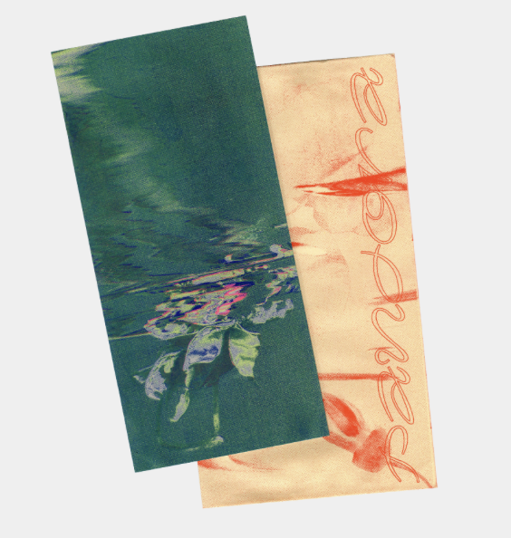
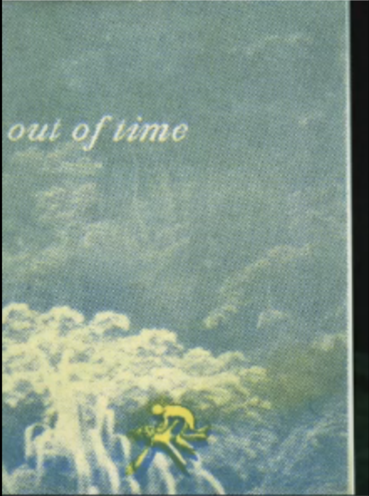
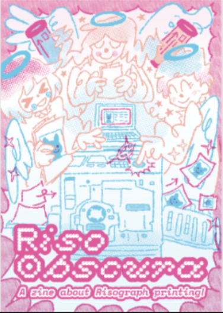

Bao Bọc

Danh's first zine is a personal perspective on a business household and aims to resonate with those who have grown up thanks to small businesses.
Based in: Vietnam
Printed by: artificial flavors press
66 pages. W138 x H198 mm
i hate the fact that

an extension zine born from real-time thoughts processing a recently ended relationship. words that have been said, while feelings remain.
Coded on p5.js.
Based in: Vietnam
Printed by: artificial flavors press
64 pages. W100 x H65mm
No Ghost No Shell

this little zine compiles a text that examines NPC streaming through the lens of digital embodiment and cyberfeminism by introducing the figure of the “witch” — a new digital woman emerging from the NPC streaming phenomenon.
Based in: Vietnam
Printed by: artificial flavors press
24 pages. W105 x H215mm
Pandora of Our Beloved Sea

this zine shall be a lucid dream where you experience the land of Ninh Thuận on the cell level.
Based in: Vietnam
Printed by: artificial flavors press
16 pages. W100 x H216mm
Reclaiming Our Digital Land

a zine about reclaiming our technology from controling corportions.
Based in: Vietnam
Printed by: artificial flavors press
20 pages. W148x H210mm
Spellshaper

a fanzine about Magic: the Gathering and lessons from 10 years of playing. each copy comes with a random Commander.
Based in: Vietnam
Printed by: artificial flavors press
14 pages. W105x H148mm
Out of Time

a zine about seperation and coming to terms with it.
Based in: Vietnam
Printed by: artificial flavors press
1 page slit & fold zine. W74x H105mm
Riso Obscura

a Risograph zine that guides the reader from making their Risograph print - color separation and distributing their print in Vietnam.
Based in: Vietnam
Printed by: artificial flavors press
16 pages. W100 x H140 mm
Please Don't Look at Me

a personal story about trust, cutting strawberries for yogurt, betrayal, waiting and leaving.
Based in: Vietnam
Printed by: artificial flavors press
1 page slit & fold zine.